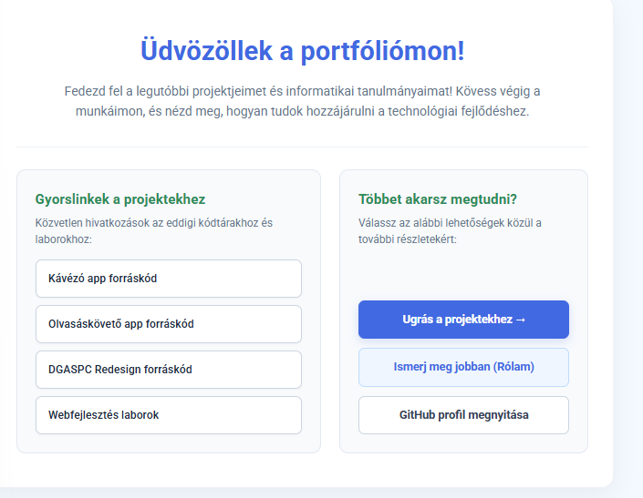
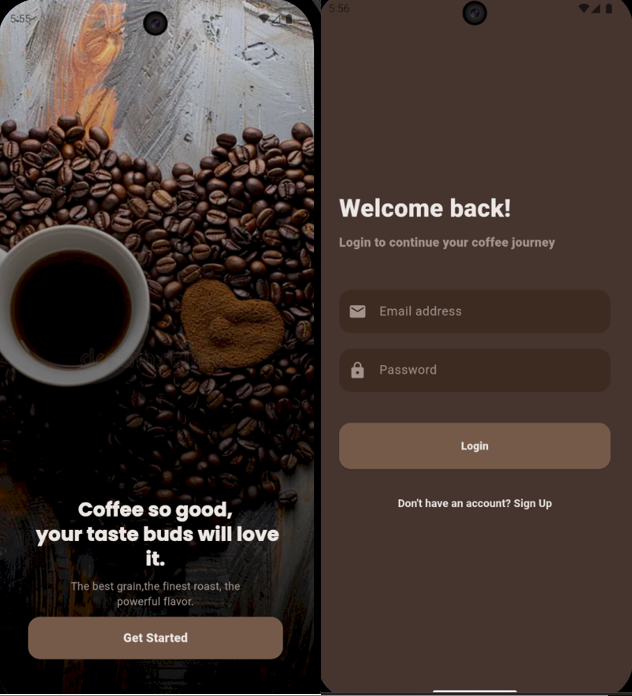

Projektek
Az eddig elkészített egyetemi és egyéni fejlesztési munkáim összefoglalója.
Projekt áttekintés táblázat
| Projekt neve | Leírás | Használt technológiák |
|---|---|---|
| Portfólió oldal | Egyéni bemutatkozó weboldal felépítése reszponzív elrendezéssel és JavaScript feladatokkal. | HTML5 CSS3 JavaScript |
| Kávézó App | Mobilalkalmazás rendelések leadására, kosárkezelésre és Firebase szinkronizációra. | Flutter Dart Firebase |
| Olvasáskövető App | Mobilalkalmazás könyvek nyomon követésére, olvasási statisztikák és felhasználói profilok kezelésére. | Java Netbeans Java Swing JSON |
| DGASPC Redesign | Weboldal újratervezése modern UI/UX elvek alapján, reszponzív és felhasználóbarát felülettel. | HTML5 CSS3 JavaScript Bootstrap PHP |
Projekt galéria

